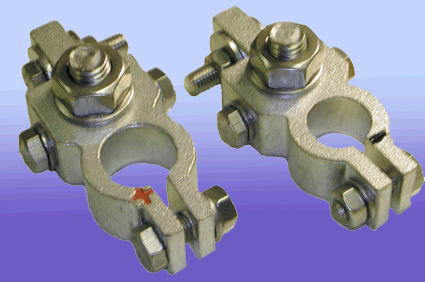
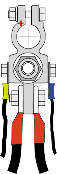

Battery connector
För att få dina kablar ombord att fungera bra måste du leta efter varje eventuellt spänningsfall. SureConnect 4 tar hand om batteriet förbindelse. Genom att använda en kabel med krimpade kabelskor är det möjligt för att få en gastät anslutning nästan utan spänningsfall. Alla kabeltrådar kommer att anslutas vilket resulterar i ett mycket lågt motstånd och en mycket låg effektförlust. Det är lätt att göra en bygel till tvåan batteri, för att ansluta en VHF eller telefonutrustning. Det finns tillräckligt plats för upp till 4 separata anslutningar direkt på terminalen, alla med samma låga spänningsfall.
|  |
|
|||||||||||
|
SureConnect4 batteriterminaler tillverkas i två typer, + pol och - stolpe, för att passa standard blybatterier polbultar. Levereras i blisterpåse komplett med alla nödvändiga skruvar.
|
SureConnect 4 Fuse Kit |
Kabelskoanslutning /
Min kabelarea |
Artikel nr
|
|
50A (Förbrukningsbatteri) |
M10 / 6 kv mm
|
20995
|
|
300A (Startbatteri) |
M10 / 25 kv mm
|
20996
|
| Reservsäkring 50A |
60050
|
|
| Reservsäkring 300A |
60300
|
|